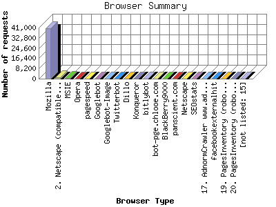

The Browser Summary identifies the most popular web browsers used to visit
this site.
Browsers are broken down by recognized categories such as
Netscape Navigator/Communicator, Microsoft Internet Explorer, WebTV, Opera
and the like. Within each category is also a subgroup by version number
such as 'MSIE 5.0' or 'Netscape 4.5'.
This report shows the first 20 results by number of requests. This report is sorted by number of requests.

| Browser Type | Number of requests | |
|---|---|---|
| 1. | Mozilla | 40,340 |
| 2. | Netscape (compatible) | 1,207 |
| 3. | MSIE | 454 |
| 4. | Opera | 82 |
| 5. | pagespeed | 35 |
| 6. | Googlebot | 28 |
| 7. | Googlebot-Image | 24 |
| 8. | Twitterbot | 22 |
| 9. | Dillo | 21 |
| 10. | Konqueror | 18 |
| 11. | bitlybot | 16 |
| 12. | bot-pge.chlooe.com | 11 |
| 13. | BlackBerry9000 | 9 |
| 14. | panscient.com | 9 |
| 15. | Netscape | 8 |
| 16. | SEOstats | 8 |
| 17. | AdnormCrawler www.adnorm.com | 7 |
| 18. | facebookexternalhit | 6 |
| 19. | PagesInventory (robot http: | 4 |
| 20. | PagesInventory (robot http: | 4 |
| [not listed: 15] | 30 | |
This report was generated on November 26, 2013 04:33.
Report time frame June 15, 2013 22:34 to November 25, 2013 19:34.
| Web statistics report produced by: analog 5.1 / Report Magic 2.21 |